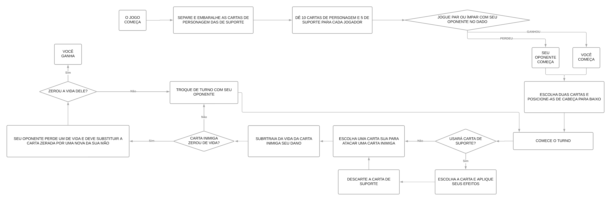

Como funciona o Card Game
O Card Game possui 108 cartas, sendo separadas em 6 classes:
-
Inovadores: são 17 personagens que colaboraram para a área da tecnologia da informação, conectando o mundo em um ambiente virtual.
-
Filósofos: são 17 personagens que revolucionaram a maneira de compreendermos o mundo ao nosso redor a partir de suas ideais e conceitos.
-
Líderes: são 18 cartas de personagens que lideraram nações, organizações ou movimentos que certamente mudaram o mundo.
-
Artistas: são 17 cartas de personagens que deixaram sua marca na história a usando a arte e literatura.
-
Inventores: são 17 cartas de personagens que influenciaram no estado atual do mundo com invenções ou descobertas inovadoras.
-
Suportes: são 22 cartas de épocas, acontecimentos ou locais marcantes que podem te ajudar a vencer uma batalha.
Ao comprar nosso jogo, você ganhará todas essas 107 cartas, somado a um tabuleiro, contadores e dano e de vida e um dado de 6 lados. Todas as regras do jogo
estão explicadas nessa página e no manual que vem junto à embalagem, e você precisará de um amigo para jogar.
Começando uma batalha:
Ao começar uma batalha, você deve separar as cartas em dois montes: um com as 85 cartas de personagens e o outro com as 22 cartas de suporte. Cada jogador
começa com 6 pontos de vida, e perde um a cada personagem derrotado. Se sua vida chegar a zero, você perde o jogo. Em seguida, você e seu oponente devem seguir
o passo-a-passo a seguir:
-
Separe as cartas: um dos jogadores deve embaralhar o montinho de personagens e suportes, e distribuí-las de maneira que cada um fique com 10 cartas
personagem e 5 cartas de suporte.
-
Marque seus pontos de vida: pegue um papel e marque os pontos de vida de cada jogador, além de quantas rodadas cada um ganhou se você pretende jogar
mais de uma vez.
-
Escolha duas cartas: essas duas cartas serão as sua duas iniciais, coloque-ás no campo ativo de cabeça para baixo sem mostrar quais são para o seu
oponente e mantenha as restantes na sua mão.
-
Jogue o dado e comece: cada jogador deve escolher entre pares ou ímpares, em seguida, vocês devem rolar o dado. Aquele que acertar o tipo de número
quer cair deve começar. Revelem as cartas de cabeça para baixo e joguem, mas lembre-se, o primeiro a jogar não pode usar uma carta de apoio no primeiro turno.
Durante a batalha:
Agora que o jogo o começou, aquele que começou pode agir e, quando terminar, será sua vez. O jogo se repetirá nesse ciclo até um dos dois ter a vida diminuída
a zero. Você só pode tomar duas ações no seu turno:
-
Atacar: você escolhe uma de suas duas cartas ativas para atacar uma das cartas do seu oponente. O número de ataque determinará quanto de vida a carta
inimiga perderá e, se a carta inimiga chegar a zero ou menos pontos de vidas, elas serão descartadas e seu oponente perderá um de vida, devendo substituir a
carta imediatamente por uma nova na sua mão. Ao atacar, use os marcadores de dano para marcar quanto de vida a carta inimiga já perdeu. Você não pode
atacar três vezes seguidas com a mesma carta.
-
Usar carta de suporte: em cada turno, você podera escolher se usará ou não uma de suas cartas de suporte. Você só pode usar 3 das suas 5 cartas e,
no máximo, uma em cada turno. Você sempre deve usar uma carta de apoio antes de atacar e, uma vez usada, a carta será descartada e não poderá ser
reutilizada, a não ser que uma outra carta permita isso.
Fluxograma de Regras:
